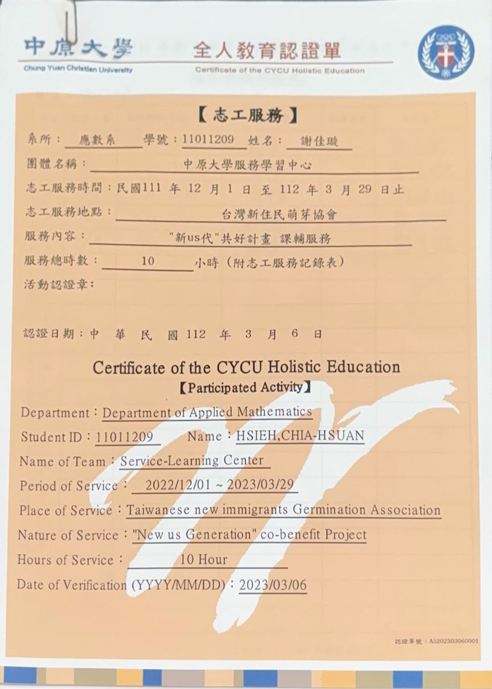

謝佳璇
我的基本資料
住址:新北市板橋區
生日:2023/7/28(獅子座)
畢業學校:中原大學應用數學系
興趣:睡覺、追劇(懸疑、醫療、推理)、拼拼圖/樂高
Sometimes good things fall apart so better things can fall together.--Marilyn Monroe
生日:2023/7/28(獅子座)
畢業學校:中原大學應用數學系
興趣:睡覺、追劇(懸疑、醫療、推理)、拼拼圖/樂高
Sometimes good things fall apart so better things can fall together.--Marilyn Monroe
我的技能
程式能力
70%
Java
75%
HTML/CSS
50%
Javascript
80%
C
60%
R
70%
MySQL
其他能力
Word/PPT
80%
UiPath
30%
影片剪輯
60%
個人經歷
一.課程專案
當時上選修課Python/R大數據資料分析，其實一開始是想學Python才選的這門課，但是課程上目標是教導R語言，
課程上主要是要使用老師教導的方法去套用在每組不同的分析資料上，得到每一組的每周分析報告，在隔一周剛上課時每組會上台報告上禮拜得到的分析結果，這堂課讓我更喜歡統計一點，因為平常上統計學或是機率論都是
理論居多，這堂課讓我可以更直觀的看到機率論、統計學的應用。輸入程式碼可以得到:平均數、標準差、信賴區間、判斷是否為常態分配，有沒有異常數值(outliers)，甚至還可以畫出柱狀圖、分位圖、QQplot的點狀圖跟箱型圖等等，可以活用各種分析理論。
點我看最終報告
點我看最終報告
修習財務管理這門課，瞭解了投資策略、風險和報酬是呈正比的、股利政策等等。其中有一個小組報告是要分析投資兩間公司之間的差異，我們從多個面向進行比較，像是投資目標、風險承受能力等等，評估哪個公司更適合長期投資、
哪個更適合短期投資，並分析投資者是傾向於追求快速的金錢報酬，還是更重視創造長遠的價值，讓我更了解財務型投資跟策略型投資的差異。
點我看最終報告
點我看最終報告
修習物件導向程式設計的時候，學習的主要內容是Java從基礎開始學習，並應用在最終報告內。所以跟朋友製作了一份使用物件導向觀念的報告，主要
功能是可以管理電影名單，一筆資料包括電影名稱、導演、上映日期、演員人數跟演員，輸入這些必填資料就可以新增一部電影，也可以依據電影名稱刪除該電影，還可以依據電影名稱或是導演名稱搜索該電影，程式裡面有用到繼承、封裝、多型、關聯性與組合還有模組化等等的物件導向觀念。
點我看最終報告
點我看最終報告
修習數據科學理論與方法的時候，學習的主要目標是從現有的資料中去看出某些關聯或是現象，
像是買了A本書的人可能會更有意願再買B物品。先知曉目標才能知道要收集哪種資料進行哪種分析，找出其中有意義的資訊並進行資料前處理，
找出會用到的部份且刪除無法使用的資料，還需針對要使用的資料去定義，經過分析後得出一份結論報告。我們的報告主要是針對身體健康會被何種因素影響，
並運用了entropy、不同健康狀況在各欄位中的百分比和odd ratio等方法進行了詳細分析。通過這些方法能夠知道不同因素對健康狀況的影響程度和相互關聯性。
PDF: 點我看最終PPT報告 書面報告:點我看最終書面報告
PDF: 點我看最終PPT報告 書面報告:點我看最終書面報告
資料庫系統這門課，主要是在學習MySQL跟一點Python，在期末的時候使用Python連接MySQL，建立一個訂單管理的資料庫，用於管理產品、
客戶、訂單、產品評價和客戶反饋。此系統主要是提供方便的商品管理和訂單處理功能，並還有多種數據查詢和報告功能，在報告中還使用Relational Model刻劃出了每個表格之間的關係。
PDF: 點我看最終PPT報告 書面報告:點我看最終書面報告
PDF: 點我看最終PPT報告 書面報告:點我看最終書面報告
數值分析是指在數學分析問題中，對於使用數值近似演算法的研究，誤差是數值分析的重要主題之一，我學到的知識主要都是圍繞著近似方法和誤差值居多。
在我們組的期末分析報告中，主要就是在講關於Centered Differences（中心差分法）其中的一種Stirling's method，它的由來、實際執行例子、和已學到的其他方法做比較。
老師要求每組拍成一段八到十分鐘的影片，回傳給老師，老師會挑出前三組優秀的在最後一堂課上台報告，老師甚至邀請來了其他學校的教授來聆聽報告再給出評價，我們這組有幸被挑選上，需要進行實體報告，是一種特別的體驗。
點我看最終報告
點我看最終報告
財務報表分析這門課，主要是學習如何分析公司給的財務報表，看適合長期投資或是短期投資、有沒有過度舉債或是潛在的財務危機跟各種財務比率分析等等，去評價一間公司財務的狀況。
這門課的老師希望大家的報告不要到最後在做，所以老師每個禮拜上完課後，會給出五個題目讓每組在裡面選取三個進行分析，最後在整合成一個報告，我們組報告中分析的是特斯拉。
報告裡面會介紹著名的安隆醜聞案，特斯拉的CEO是誰、商標、發行的債券、每年的每股盈餘等等，進行一些分析。
點我看最終報告(跳轉至網頁)
點我看最終報告(跳轉至網頁)
問題導向的數學思考之線性代數，每個小組選擇有興趣的部分要上台報告，我們組是選擇反矩陣和轉置矩陣，其中包含了轉置矩陣的定義和基本性質，
單位矩陣、行列式值、伴隨矩陣跟反矩陣的公式。我們組除了我還有兩個外籍生，這是我第一次跟外籍學生合作做報告，我覺得外籍生最棒的優點是不會怕表達出自己的想法，上台也不會却場，是值得我好好學習的地方。
點我看最終報告
點我看最終報告
問題導向的數學思考之教國中生微積分，這個分組和線性代數的分組是不一樣的，這個的組員人數更多更需要團隊配合，老師要求我們使用LaTeX做一份報告主題是:「從平面幾何到大學數學」，內容讓每組自由發揮， 在透過充分的討論最後我們選擇講解微分的定義，其中包含了極限、連續、導數等等的介紹。在這份報告中我收穫最大的是我發現我可以當人體翻譯機，因為外籍生跟其他人有一些溝通不順暢，但是我有上一次跟他們合作的經驗所以我可以幫助團隊溝通，讓討論進行得更順利。
點我看最終報告
點我看最終報告
二.課外活動
這是我偶然間在學校網頁看到的志工活動，當時想說可以去參加看看，因為我自認為還挺有耐心的，有這個機會可以去接觸國小的小孩並且輔導他們功課當然要好好把握。在輔導小朋友的地方其實空間也不大，那裡裡的叔叔對我們幾個志工是很客氣地，但是對小孩子講話有一點點大聲，那個班級裡面人數並不多大概4、5個，一天有兩個志工會去幫忙，一次一個小時，一個禮拜會去一次。經過這次的經歷，讓我知道有些小朋友不專心寫作業其實只是想要有人可以關注他們、想要有人可以陪他們玩。他們都是可愛的小孩，可惜後來他們那個機構好像行政上有一些意外，之後就沒有志工活動了。
查看電子證明

曾經在111學年第二學期拿到統計學科優異獎項、112學年第一學期拿到書卷獎，拿到獎項的時候都挺驚訝的，沒想到我在大學時期還可以拿到獎狀。還在112年8月30、31和朋友一起去參加中華民國數學會在台大舉辦的帶專學生數學營，那兩天有很多很厲害的教授或是業界有名的人來分享自己的心路歷程，跟分享數學可以應用到的領域有多廣闊。聽每位教授的精力都覺得超級厲害，希望我也可以變成對社會有用的人。
點擊我看關於大專數學營證明
點擊我看關於大專數學營證明
推薦影集!!!